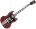

De: La Frikipedia, la enciclopedia extremadamente seria.
De: La Frikipedia, la enciclopedia extremadamente seria. De: La Frikipedia, la enciclopedia extremadamente seria.
Brian Harold May nació en Inglaterra, era un hijo de la Gran bretaña . Es conocido mundialmente por haber sido guitarrista de la exitosa banda británica Queen. Está en el puesto 39º de la revista "Rolling Stone" , lo cual no dice mucho de esta revista
El sonido característico de la Red Special, la guitarra de May, es sin duda místico suena como un gato atropellado sin piedad , pero en do sostenido. Impulsor de la "guitarra-orquestación" llamada así por el uso de varias guitarras que se escuchaban simultáneamente e imitando diferentes voces logrando así ahorrarse colaboraciones de otros guitarristas y una pasta gansa. Ésta fue reverenciada por su bella complejidad armónica con la que lograba crear atmósferas y líneas melódicas llenando cada rincón de su música sin necesidad de sintetizadores, hasta de geim, época en la cual se rindió a la música disco , un poco tarde porque la fiebre del sábado noche hacía tiempo que pasó , pero se lo pasa por el forro. Junto a Freddie Mercury, ha formado el mejor dueto de la historia del Rock , incluso algún que otro trío.
Ha hecho cuatro álbumes en solitario: Mi primer álbum y me voy a forrar yo solito ,( un disco penoso Me peino con una batidora , Live At the banda municipal y a tomar por culo, no me como un rosco . Colaboró con el cantante español Ramoncín en la canción "haz un chiste y te vas a cagar".
La historia de ésta guitarra comenzó en 1963, cuando Brian May, con tan sólo 16 años, se dió un golpe en la cabeza y se le ocurrió la idea de la máquina del tiempo, pero se dió otro y se le ocurrió la guitarra. Así que decidió cambiar su guitarra acústica por una eléctrica, pero en esa época el joven Brian no disponía del dinero para comprarse las caras Gibson y Stratocaster que había en el mercado. Así que con la ayuda de su padre , decidió embarcarse en un difícil proyecto: fabricarse su propia guitarra, trabajo que comenzó en agosto del ´63 en un dormitorio de su casa convertido en taller. Para la elección del material, Brian tuvo que buscar minuciosamente. Por ejemplo, para el mástil utilizaron la madera de un barco hundido, las lágrimas de un hada ,el sufrimiento de una madre...
El mástil formaba parte del palo mayor del barco hundido . La caoba era de buena calidad, pero estaba mojadita. Rellenó los agujeros con madera que le quitó a pinocho y los cubrió con resina. Lo demás , cuando despertó , unos duendes ya habían hecho casi todo.
Brian continuó buscando el sonido que él perseguía. Tras muchos experimentos, descubrió que tocando con una moneda de seis peniques como púa conseguía un sonido de gato atropellado. Y usando esa moneda es como Brian ha tocado en todos los discos y todos los recitales de Queen.
Rock & Roll 
| ||
|---|---|---|
|
Bandas
Personajes
Variado
|
Autor(es):